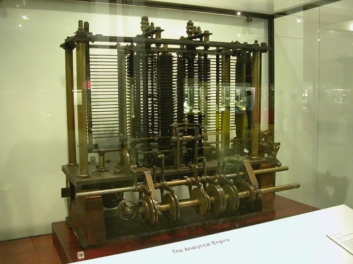

About Me
Hi! I'm Ada, Countess of Lovelace and am an English mathematician and writer, chiefly known for my work on Charles Babbage's proposed mechanical general-purpose computer, the Analytical Engine.
I am one of the first to recognize that machines have applications beyond pure calculation, and to have published the first algorithm intended to be carried out by such a machine.
In my free time I like to read about scientific developments, mathematics, and computational mathematics. I also like to take my chances of winning big.
Fun fact! I've been programing for 0 seconds!
Projects
The first computer program

The world's first computer program for computing Bernoulli numbers.
The Analytical Engine
I helped Charles Babbage on topics ranging from math to computation that helped the development of the Analytical Engine.
The Ada programming language
My work inspired the United States Department of Defense to name their new programming language after me.